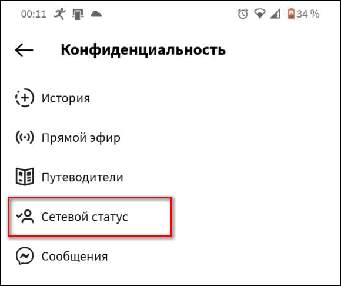
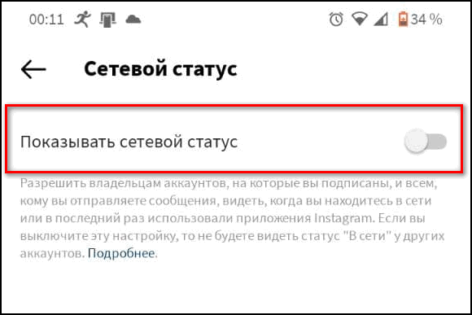
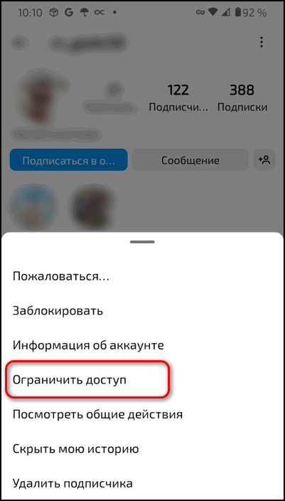
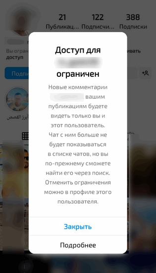
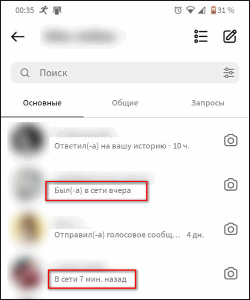
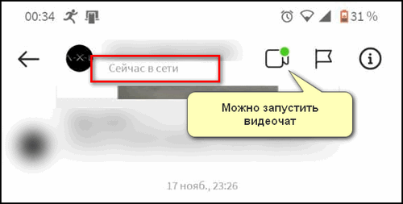
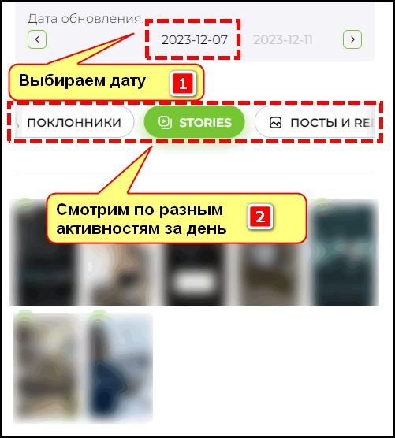
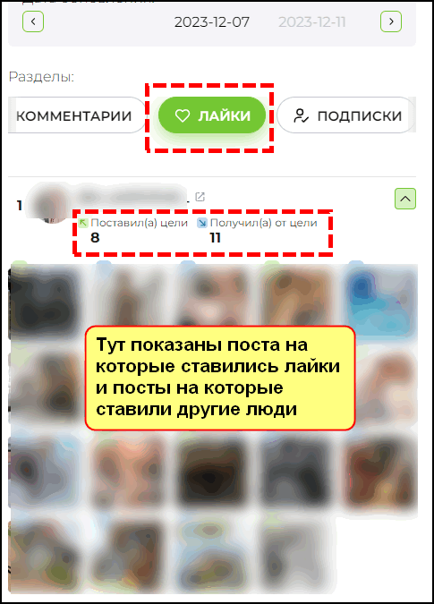
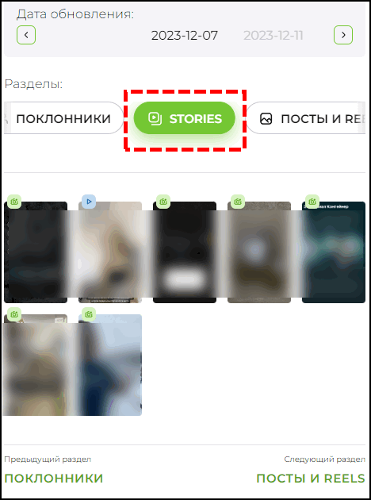
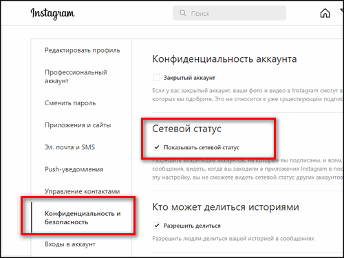

Сетевой статус в Инстаграме: включить, убрать или узнать когда человек был онлайн

- Что такое сетевой статус в Инстаграме*
- Как включить и выключить сетевой статус
- Заблокировать человека временно - простой способ скрыть свой статус
- Как узнать что друг был в сети
- Узнать о посещении через Инсташпион
- Если не видно статуса «В сети» в Инстаграме*
- Как узнать что был в сети по активности в профиле
Сетевой статус в Инстаграме* работает в сообщениях и необходим, чтобы пользователи знали, когда их друзья посещают социальную сеть. Эта же функция удобна для интернет-магазинов, где клиенты могут посмотреть активность менеджера и график работы.
Что такое сетевой статус в Инстаграме*
Сетевой статус – один из подпунктов настроек в приложении, который можно сделать доступным для всех или напротив, скрыть от окружающих. Посмотреть сетевой статус в Инстаграме* возможно через раздел: «Директ», где пользователи делятся сообщениями. Функция работает только на тех, кто взаимно подписан.
Узнать свой сетевой статус в Инстаграме*:
- Зайти в приложение – Настройки.

- Конфиденциальность – Сетевой статус.

Так как это является личной информацией, то подраздел находится во вкладке: «Конфиденциальность». Если владелец учетной записи включает функцию, то друзья смогут посмотреть его активность. Также и те, кто писал в личные сообщения.
Помимо зеленого значка, который появляется возле аватарки, если пользователь в сети, появится последнее время посещения. Например, «Был в сети 21 октября» или «»Последняя активность 8 часов назад».
Как включить и выключить сетевой статус
- С помощью раздела в «Настройках» можно включить сетевой статус в Инстаграме*. Если владелец профиля хочет, чтобы видели онлайн он или нет только ограниченный круг пользователей, можно сделать профиль закрытым или «Ограничить доступ».
- Второй способ предполагает, что переписка будет перенесена в раздел: «Запросы» и оппонент не увидит, было ли прочитано его сообщение.
- Зайти в Инстаграм* – Настройки.
- Конфиденциальность – Сетевой статус.
- Переместить ползунок в состояние: «Активно».
Теперь любой, кто написал в личные сообщения, сможет посмотреть активность владельца страницы. Статус срабатывает, как только владелец заходит в свою учетную запись.
Чтобы отключить сетевой статус, достаточно переместить ползунок в состояние «Выключен». Тогда рядом с никнеймом в Директе пропадет уведомление: «Был в сети».
Заблокировать человека временно - простой способ скрыть свой статус
Один из способов, как скрыть свой сетевой статус и не дать узнать его другому пользователю – временная блокировка. Это поможет, если нужно временно скрыть о себе данные и восстановить в любой удобный момент. Как заблокировать:
- Перейти на страницу к другому человеку – нажать сверху три точки.
- Появится дополнительное меню и пункт: «Заблокировать» или «Ограничить доступ».

- Выбрать способ блокировки – подтвердить.

Если ограничить доступ, то пользователь останется в списке друзей, но не увидит чат, последние публикации и Историю. При полной блокировке человек будет исключен из списка друзей. Владельцам закрытых профилей придется заново добавлять и подтверждать заявку.
Как узнать что друг был в сети
Зеленый кружок онлайн показывает активность и других пользователей. Если друг был недавно в сети и у него активна эта же функция – узнать не составит труда. Определить, что друг был недавно в сети:
- Зайти в Директ – нажать по выбранному чату.

- Сверху появится: «Был в сети».

Владелец страницы сможет отправить сообщение и получить ответ, если его товарищ в сети. Но статус не всегда точно работает и нередко срабатывает, если владелец профиля просто открыл приложение. Или напротив: если посетил социальную сеть, но не выполнял никаких дополнительных действий.
Узнать о посещении через Инсташпион
Как узнать, когда человек был в сети в Инстаграме*? Проще всего через Инсташпион: сервис показывает скрытые Истории, анонимных посетителей страницы, гостей, взаимные комментарии и лайки. С его помощью можно отследить, какую Сторис опубликовал владелец последней и посмотреть её без отображения в списке «Зрители». Как через Instashpion узнать, когда человек заходил в Инстаграм*:
- Зайти в Инсташпион – пройти простую регистрацию.
- Добавить цель – после загрузки данных перейти к списку активностей.

- Через «Лайки» и «Комментарии» можно узнать, когда человек был в сети.

Или с помощью раздела «Истории»: которые пользователь мог размещать в своем профиле при последнем посещении социальной сети.

Узнать, онлайн ли человек в Инстаграме* через Инсташпион, а также отследит его активность – удобно и просто. Сервис предлагает добавить несколько целей для наблюдения, а главное – это не противоречит правилам конфиденциальности социальной сети.
Посетитель видит проанализированные данные, где доступны частые гости аккаунта: те, кто оставляет комментарии, был взаимно подписан или регулярно ставит лайки. Таким способом можно узнать, с кем общается близкий человек и кому отправляет отклики на Stories, посты.
Если не видно статуса «В сети» в Инстаграме*
В случае, когда не видно сетевой статус в Инстаграме* или его попросту нет среди настроек – нужно обратиться к текущим обновлениям. В Instagram* регулярно выходят новые версии: владелец аккаунта должен установить автоматические обновление. Другие причины, почему не видно сетевой статус:
- пользователь, с которым переписка, сделал аккаунт закрытым и не добавил во взаимные друзья;
- техническая ошибка. Есть вариант решения с помощью компьютерной версии;
- нужно обновить приложение.
Если с мобильного приложения не удается указать сетевой статус – его можно установить с компьютерной:
- Зайти в Инстаграм* с веб-версии – нажать по аватарке сверху.
- Настройки – Конфиденциальность и безопасность.

- Сетевой статус – установить галочку.
Если нужно убрать: либо сделать это с мобильной версии, либо снова перейти с веб-формата. В таком случае, функция должна работать корректно и отображаться у всех, кто написал сообщения в Директ.
Как узнать что был в сети по активности в профиле
Если не видно сетевой статус в Инстаграме*, то можно определить активность в профиле другими способами. Наиболее эффективный и распространенный – посмотреть последние опубликованные Истории. Как определить, что друг был в сети:
- Перейти в профиль к выбранному человеку.
- Нажать по значку аватарки – посмотреть время последней опубликованной Stories.
Но другой пользователь может скрыть Истории от определенных пользователей или вовсе заблокировать. Поэтому стоит проверять через второй аккаунт: сервисы анонимного просмотра не подходят по причине, что они не отображают время размещения.